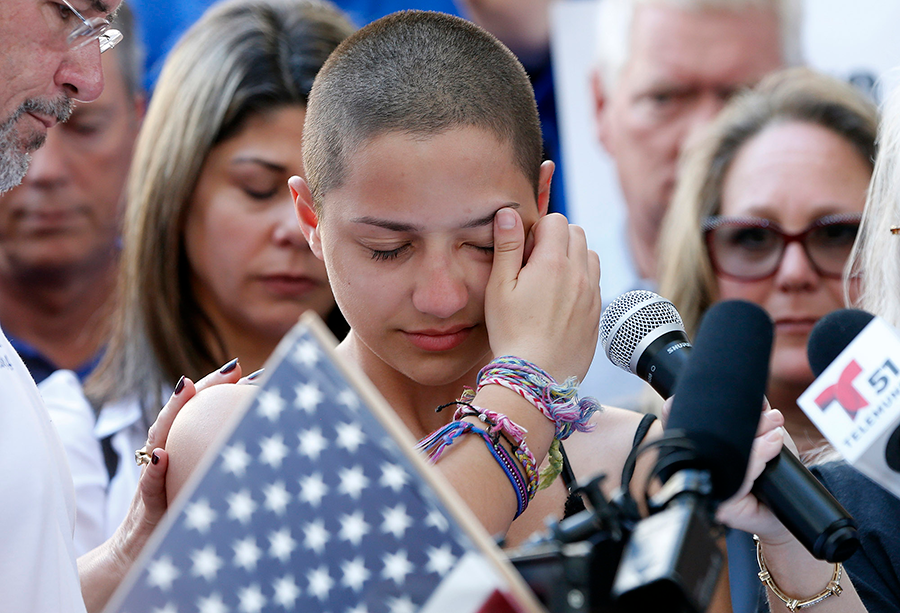

School shootings happen all over the U.S.
School shootings happen all over the U.S.
School shootings have occured all over the United States, as seen in the map below. In general, higher population areas have seen more incidents, with shootings clustered on the east and west coasts. California, which is the most populous state in the country, had 27 school shooting incidents since 1999, the most of any state. The next highest state was Florida with 16 school shootings since 1999.
At least five school school shootings have occurred every year since 1999, with an average number of 11 shootings per-year. 2006 and 2014 had the highest number of incidents with fifteen and sixteen school shootings, respectively. As can be seen the chart below, the past three years have remained consistently high, with at least a dozen incidents each year.
Shootings by year
The number of shootings per year has generally remained high in the US since the turn of the century, with noticable dips in 2002, 2011 and 2015. The last three years, the number of shootings has been consistantly high.
Source: Data collected by The Washington Post
An analysis of the data shows that cities with the most number of school shootings tend to be large urban areas with high crime rates. Chicago, Los Angeles and Philadelphia top the list with five school shootings each. The data also reveals that the majority of shootings occur in places that would be considered “cities”, while just 14% occur in rural areas (see chart below).
Almost all school shootings occur at public schools. According to the data collected by the Washington Post, only 5% of school shootings since 1999 have occured at a private school.
The carnage of school shootings
131 people have been killed in school shooting incidents in the United States since the Columbine massacre in 1999. The two deadliest years since have been 2012, when 26 people were killed at Sandy Hook Elementary School, and 2018, when 21 people were killed at Parkland High School. The chart below compared the number of people killed, the number of the people injured and the number of incidents by year since 1999.
Examining the carnage
2012 was the deadliest year this century, with 32 fatalities. Incidents occured at Sandy Hook Elementary School in Newtown, Conn and Oikos University in Oakland, Calif. that year.
Source: Data collected by The Washington Post
A school resource officer was not present at the vast majority of school shooting incidents. According to the Washington Post data, officers were present in only 35 percent of incidents.
The presence of a school resource officer is widely seen as a positive security measure, though has produced mixed results in the past. A single school resource officer is credited with stopping an incident at a Great Falls High School in Maryland in 2018 after firing at the shooter. A school resource officer was widely criticized, and later resigned, for his behavior during the Parkland High School shooting in 2018, when he was accused of staying outside of the school during the rampage.
Most school shootings are targeted, seeking to harm a specific individual or group. Over 60% of shootings fall into this category, followed by indiscriminate shootings and accidental. See the chart below for more details.
Shootings by type
Targeted shootings are by far the most common, accounting for over 60 percent of school shootings by type.
Source: Data collected by The Washington Post
The surviving victims of school shootings are increasingly putting pressure on state and national legislators to pass stricter gun control laws and take action on mass shootings. This video from The New York Times features school shooting survivors talking about their desire to see action taken by lawmakers.
The survivors of the Majory Stoneman Douglas High School shooting have come out on the national stage as a driving force promoting the passage of new gun legislation to protect against future school shootings.

Emma Gonzalez, a senior at Marjory Stoneman Douglas High School, speaks at a rally for gun control. Photo from People Magazine.
A profile of the shooters
The vast majority of school shooters are young white men.
According to the data collected by the Post, 95 percent of school shooters were male. Similarly, most shooters were white; 55 percent of school shooters were white and 33 percent were black, as seen in the chart below. The average age of school shooters is 19 years old. Four of the school shooters were under 10-years-old and fourteen were over 40. Most shooters were students or former students of the school where the shooting occured.
What race are school shooters likely to be?
55 percent of school shooters are white
Source: Data collected by The Washington Post
The deadliest school shootings in America
The two most deadly shootings in modern American history occurred within the last few years. The Sandy Hook Elementary School shooting killed 26 people. The shooting at Marjory Stoneman Douglas High School killed 17. The deadliest school shooting in U.S. history occurred in 1927 in Bath Township, Michigan when a school board treasurer killed 38 elementary school students and six adults.
Joaquin Oliver, Marjory Stoneman Douglas High School shooting victim. Photo from Sun Sentinel.